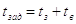
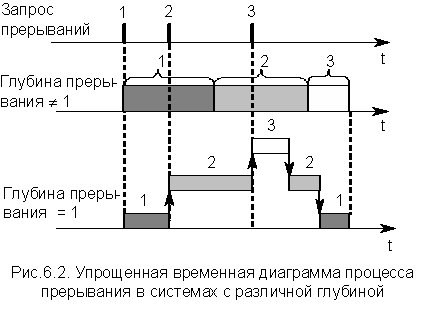
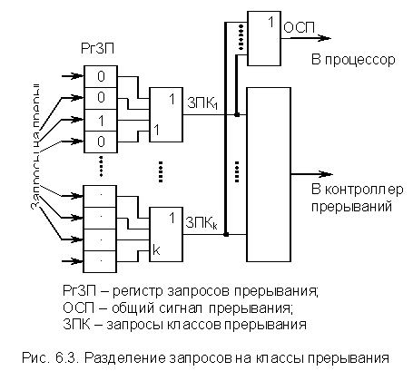
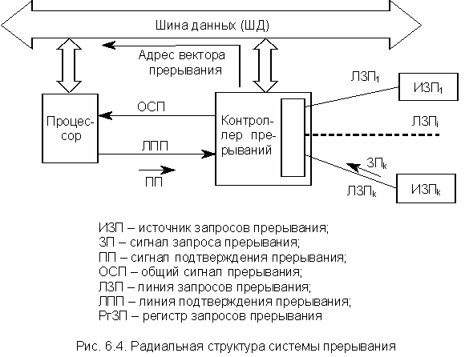
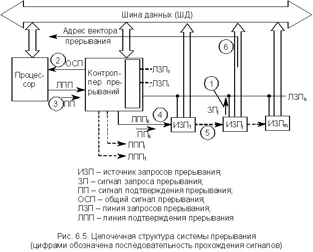
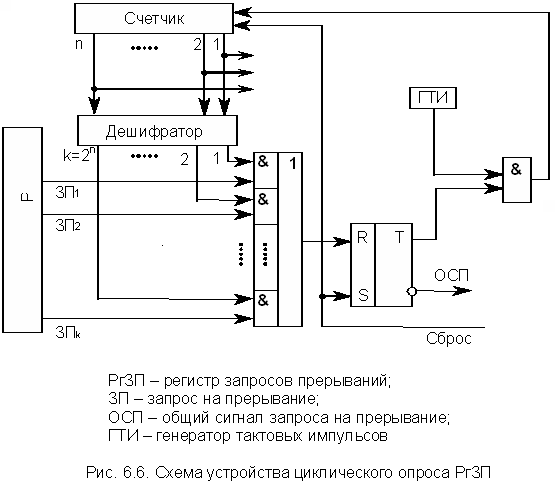
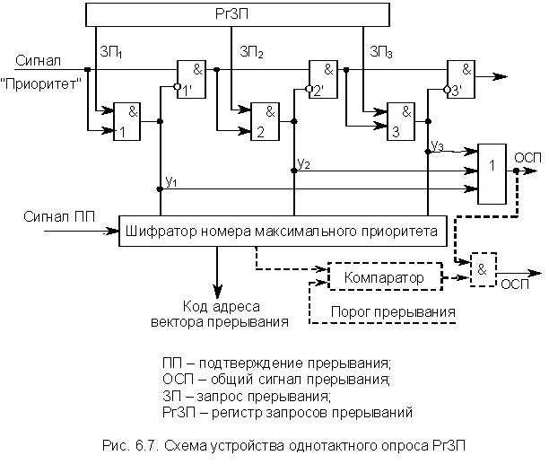
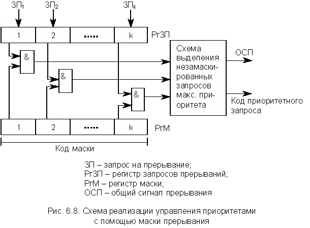

Эффективность систем прерывания ЭВМ может оцениваться по весьма многочисленным характеристикам, которые отражают особенности их технической реализации. Однако для изучения общих принципов построения систем прерывания достаточно рассмотреть только самые обобщенные. К их числу относятся следующие характеристики.
Общее количество запросов прерывания
Количество запросов прерывания (источников запросов прерывания – ИЗП) существенно различается у ЭВМ различных типов и может достигать десятков. В системах прерывания радиальной структуры это понятие может совпадать с понятием количества входов в систему прерывания. При цепочечной организации системы прерывания эти понятия не совпадают.
Время реакции
Время реакции определяется как временной интервал между появлением запроса прерывания и началом выполнения прерывающей программы.
На рис. 6.1 приведена упрощенная временная диаграмма процесса прерывания в предположении, что управление запоминанием и возвратом возложено на сам обработчик. В этом случае он состоит из трех частей – подготовительной и заключительной, обеспечивающих переключение программ, и собственно прерывающей программы, выполняющей затребованные запросом операции. Кроме того, предполагается, что запрос представлен уровнем потенциала.
Для одного и того же запроса задержка в исполнении прерывающей программы (обработчика данного запроса) зависит от того, сколько запросов со старшим приоритетом ожидает обслуживания, поэтому время реакции определяется для запроса с наивысшим приоритетом. На рис. 6.2 оно обозначено tp.
Задержка прерывания (издержка прерывания)
Задержка прерывания (tзад) определяется суммарным временем на запоминание (tз) и восстановление (tв) программы (см. рис. 6.2):

Глубина прерывания
Глубина прерывания определяет максимальное число программ, которые могут прерывать друг друга. Если после перехода от основной программы к прерывающей обслуживание остальных запросов запрещено, то считается, что система имеет глубину прерывания, равную 1. Глубина равна n, если допускается последовательное прерывание до n программ. Глубина прерывания обычно совпадает с числом уровней приоритетов в системе прерывания. Если глубина прерывания не равна 1, то упрощенно это можно изобразить диаграммой (рис. 6.2). Здесь имеется в виду, что приоритет прерываний возрастает у каждого следующего запроса. Системы с большим значением глубины прерывания обеспечивают более быструю реакцию на срочные запросы.

Насыщение системы прерывания
Если запрос окажется не обслуженным к моменту прихода нового запроса от того же источника (т.е. того же приоритета), то возникает явление, называемое насыщением системы прерывания. В этом случае часть запросов прерывания будет утрачена, что для нормальной работы ЭВМ недопустимо. Поэтому быстродействие ЭВМ, характеристики системы прерывания и частоты возникающих запросов должны быть строго согласованы, чтобы насыщение было невозможно.
Допустимые моменты прерывания программ
В большинстве случаев прерывания допускаются после выполнения любой текущей команды, когда время реакции на прерывание определяется, в основном, длительностью выполнения одной команды.
При работе ЭВМ с быстрыми технологическими процессами в реальном масштабе времени (т.е. в контурах управления реальных физических процессов) это время может оказаться недопустимо большим. Кроме того, существуют задачи, при выполнении которых требуется немедленная реакция на ошибку, обнаруженную, например, аппаратурой контроля, чтобы не допустить выполнения ошибочно сформированного кода команды. Такие ситуации характерны для управляющих ЭВМ военного назначения.
В этом случае в системе прерывания реализуется возможность прерывания после любого такта выполнения команды программы. Однако это требует запоминания, а потом восстановления гораздо большего объема информации, чем в случае прерывания после окончания команды, поэтому такая организация прерываний возможна только в ЭВМ с быстродействующей сверхоперативной памятью достаточного объема.
Число уровней прерываний
Уже отмечалось, что в ЭВМ число различных источников запросов (причин) прерывания может достигать десятков и даже сотен. Однако в ряде случаев многие запросы поступают от групп однотипных устройств, для обслуживания которых требуется одна и та же прерывающая программа (обработчик). Запросы от однотипных устройств целесообразно объединить в группы, каждой из которых будет соответствовать свой сигнал запроса прерывания.
Уровнем или классом прерывания называется совокупность запросов, инициирующих одну и ту же прерывающую программу (обработчик).
Технически такое объединение может быть реализовано по-разному. На рис. 6.3 приведен возможный вариант решения этой задачи при условии, что все поступающие запросы фиксируются в разрядах регистра запросов прерывания (РгЗП).

Запросы от всех источников поступают в РгЗП, устанавливая соответствующие его разряды (флажки) в состояние 1, указывающее на наличие запроса прерывания. Запросы классов прерывания ЗПК1-ЗПКk формируют элементы ИЛИ, объединяющие разряды РгЗП, относящиеся к соответствующим уровням. Еще одна схема ИЛИ формирует ОСП, поступающий в УУ процессора. Он формируется при любом запросе (поднятом флажке) прерывания.
Информация о действительной причине прерывания (конкретном источнике запроса), породившей запрос данного класса, содержится в коде прерывания, который отражает состояние разрядов РгЗП, относящихся к данному классу прерываний. В процессе обработки прерывания эти разряды (содержащийся в них код) подвергаются анализу. Такое объединение прерываний в классы уменьшает объем аппаратуры, но замедляет работу системы прерывания. После передачи управления прерывающей программе соответствующий триггер РгЗП сбрасывается.
Конкретные технические реализации систем прерывания имеют множество вариантов и зависят от типа используемого процессора, структуры системного интерфейса, целевого назначения ЭВМ. В то же время все они являются сложными комбинациями небольшого количества базовых структур систем прерывания. Ниже рассматриваются две основные базовые структуры – радиальная и цепочечная.
Радиальная структура
Обобщенная структура системы прерывания радиального типа представлена на рис. 6.4 (ША и ШУ не изображены).
Характерной особенностью радиальной структуры является то, что каждый ИЗП (в частном случае ПУ) подключен через ЛЗП к отдельному входу контроллера прерываний. В этом случае число подключаемых ИЗП определяется числом входов в систему прерывания. Поступающие запросы, как правило, фиксируются в разрядах РгЗП. Запросы от ИЗП могут быть представлены как уровнем потенциала, так и его перепадом, поскольку поступают в контроллер по отдельным линиям. Однако представление запроса потенциалом более предпочтительно, поскольку система прерывания становится более устойчивой как к помехам, так и к сбоям аппаратуры. Это существенно снижает вероятность пропуска запроса от ИЗП.

Основным преимуществом такой структуры является упрощение аппаратных средств ИЗП, относящихся к обслуживанию процесса прерывания, поскольку в их функции входит только формирование сигнала запроса прерывания, т.е. необходим только запросчик.
Цепочечная структура
Обобщенная структура системы прерывания цепочечного типа представлена на рис. 6.5 (ША и ШУ не изображены).
Характерной особенностью цепочечной структуры является то, что к одной ЛЗП может подключаться множество ИЗП. Каждая ЛЗП соответствует одному входу в систему прерывания и обладает собственным уровнем приоритета. В отличие от радиальной структуры запросы от ИЗП всегда представлены уровнем потенциала. Поэтому выходные каскады аппаратных средств формирования запросов в каждом ИЗП представляют собой ключи с открытым коллектором, объединенные по схеме монтажного "или". Это позволяет исключить потерю запросов, одновременно выставленных разными источниками на одну ЛЗП. Запросы прерывания, поступающие с разных ЛЗП и имеющие различный приоритет, могут фиксироваться (как и в предыдущем случае) в разрядах РгЗП.

Основным преимуществом такой структуры является практически неограниченное количество ИЗП, подключаемых к одному входу системы прерывания (одной ЛЗП) без снижения быстродействия. Однако сложность и объем аппаратуры поддержки системы прерывания в каждом ИЗП существенно увеличиваются, что увеличивает стоимость системы прерывания и ЭВМ в целом. Помимо запросчика каждый ИЗП должен содержать также аппаратуру формирования кода адреса вектора прерывания. Да и аппаратура самого запросчика также усложняется. Кроме того, необходимо принять меры для того, чтобы при отсутствии любого ИЗП цепь распространения сигнала ПП не размыкалась. Это обеспечивается либо специальной конструкцией контактов слота, либо перемычками на системной плате.
Несмотря на усложнение и удорожание подобных систем прерывания по сравнению с радиальными, они очень широко используются в вычислительных системах самой разной архитектуры и назначения.
Конкретные реализации процедур перехода к прерывающей программе во многом зависят от структуры системы прерывания и типа используемого процессора. Между тем можно сформулировать некоторые общие принципы построения этих процедур. В любой процедуре перехода к обработчику главное место занимает передача текущего вектора состояния прерываемой программы на хранение в стек, а затем загрузка в регистры процессора вектора прерывания, т.е. начального вектора состояния обработчика, который, как уже отмечалось, в большинстве случаев состоит только из одного элемента – начального адреса. Векторы прерывания хранятся в фиксированных ячейках ОП, поэтому процессор должен предварительно получить адрес соответствующего вектора прерывания. При наличии нескольких ИЗП процедура перехода к прерывающей программе включает в себя также операции по выявлению запроса прерывания с максимальным приоритетом.
Следует отметить, что различают абсолютный и относительный приоритеты.
Абсолютный приоритет – запрос, имеющий абсолютный приоритет, при поступлении сразу же прерывает выполняемую в процессоре программу и инициирует выполнение соответствующего обработчика.
Относительный приоритет – запрос, имеющий относительный приоритет, при поступлении является первым кандидатом на обслуживание после завершения выполнения текущей программы.
Именно метод обнаружения запроса с максимальным приоритетом и способ формирования адреса вектора прерывания различают процедуры обработки прерываний в системах радиальной и цепочечной структуры. Ниже коротко рассматриваются основные моменты перехода к прерывающей программе для обоих случаев.
Радиальная структура
В соответствии с рис. 6.5 все запросы от ИЗП фиксируются в разрядах РгЗП, который еще называется регистром флажков. При поступлении запроса в соответствующий разряд РгЗП записывается 1 (поднимается флажок). Дальнейшая последовательность операций по реализации процедуры перехода к прерывающей программе следующая:
Цепочечная структура
В соответствии с рис. 6.6 к каждой ЛЗП (входу системы прерывания) может быть подключено множество запросчиков ИЗП, объединенных по схеме монтажное "или". Сигнал "подтверждение прерывания" распространяется по цепочке ИЗП, подключенных к одной ЛЗП. Распространение этого сигнала блокируется ИЗПj, выставившим запрос. Получив сигнал "Подтверждение прерывания", ИЗПj выставляет на ШД код адреса вектора прерывания. Таким образом, приоритет подключенных к одной ЛЗП устройств определяется положением ИЗП в цепочке распространения сигнала "Подтверждение прерывания". Это исключает необходимость выполнения процедуры поиска запроса с максимальным приоритетом среди ИЗП, подключенных к одной ЛЗП.
Если ЛЗП несколько, что обычно имеет место в реальных системах прерывания цепочечной структуры, в контроллере прерывания выполняется процедура поиска возбужденной ЛЗП с максимальным приоритетом, которая аналогична процедуре поиска запроса с максимальным приоритетом в системе радиальной структуры.
На основании вышеизложенного можно сформулировать последовательность основных операций по реализации процедуры перехода к прерывающей программе. При этом предполагается, что состояние возбужденных ЛЗП фиксируется в разрядах РгЗП, несмотря на то, что при потенциальном способе задания сигналов запросов прерывания его наличие не обязательно.
В простых системах прерывания цепочечного типа может присутствовать только одна ЛЗП. В этом случае отпадает необходимость выполнения процедуры поиска ЛЗП с максимальным приоритетом, которая, даже если выполняется аппаратными средствами, требует сравнительно больших временных затрат. Отпадает необходимость и в контроллере прерываний, поскольку сигнал с ЛЗП может непосредственно поступать на соответствующий вход процессора вместо сигнала ОСП. Такие системы прерывания являются наиболее динамичными даже при достаточно большом количестве ИЗП.
Уже неоднократно отмечалось, что обязательным компонентом процедуры перехода к обработчику является операция обнаружения наиболее приоритетного запроса прерывания (радиальная структура) или ЛЗП (цепочечная структура), которая в большинстве случаев выполняется в контроллере прерываний. Тем самым реализуется система приоритетных соотношений между ИЗП или цепочками ИЗП. Эта система приоритетных соотношений может быть либо фиксированной, либо изменяться программным путем в процессе обработки задачи. В соответствии с этим различаются системы прерываний с фиксированными приоритетами и с программно-управляемыми. Большинство контроллеров прерываний являются программируемыми и могут реализовывать систему как фиксированных, так и программно-управляемых приоритетов. Ниже рассматриваются некоторые варианты реализации процедур установления приоритетных соотношений обоих типов.
Реализация фиксированных приоритетов
Рассмотрим только простейший случай установки приоритетных соотношений, состоящий в том, что уровень приоритета определяется порядком присоединения ЛЗП к входам системы прерывания, т.е. разрядам РгЗП. Пусть максимальный приоритет имеет вход с минимальным номером. В этом случае поиск ЛЗП с максимальным приоритетом сводится к поиску крайнего левого поднятого флажка в РгЗП. Процедуру поиска можно реализовать как программными, так и аппаратными средствами. В ряде случае эту процедуру называют соответственно программным или аппаратным полингом.
Программный опрос РгЗП
Начало поиска инициируется сигналом ОСП. Программа поиска состоит из последовательности условных операторов, анализирующих разряды РгЗП, начиная с младшего. При обнаружении поднятого флажка управление передается обработчику. Если сигнал ОСП после выполнения обработчика не снимается, происходит повторный анализ разрядов РгЗП и поиск ЗП с максимальным приоритетом среди ЗП, оставшихся не обслуженными.
Программный полинг требует минимальных аппаратных затрат, поскольку выполняется процессором, а в качестве РгЗП можно использовать какой-либо управляемый регистр (т.е. БИС контроллера прерываний не требуется). Однако существенным недостатком метода является большое время поиска ЗП, особенно при большом количестве ЛЗП.
Для уменьшения времени поиска ЗП с максимальным приоритетом используют аппаратную реализацию алгоритма. Ниже рассматривается возможная структура такого устройства.
Аппаратный циклический опрос РгЗП
Структурная схема устройства, реализующего аппаратный циклический опрос разрядов РгЗП, представлена на рис. 6.6. Устройство аппаратного полинга входит в состав контроллера прерываний и функционирует следующим образом.
Опрос k линий запросов прерываний производится с помощью n-разрядного счетчика (2n ≥ k), на вход которого поступают импульсы от ГТИ. Поиск начинается со сброса счетчика и установки T в состояние 0. При этом импульсы от ГТИ через схему & начинают поступать на вход счетчика. На выходах дешифратора, начиная с первого, последовательно появляются единицы. Это происходит до тех пор, пока не попадается возбужденная линия запроса прерывания, на которой тоже выставлена 1. В этом случае триггер T перебрасывается в состояние 1 и в процессор идет сигнал ОСП. Кроме того, прекращается поступление импульсов ГТИ на вход счетчика, т.е. завершается просмотр входов системы прерывания. Содержимое счетчика – код номера запроса (старшего по приоритету) используется для формирования адреса соответствующего вектора прерывания. После передачи управления обработчику счетчик и триггер сбрасываются в 0 сигналом "Сброс", и процедура опроса разрядов РгЗП возобновляется.

Рассмотренный метод опроса разрядов РгЗП существенно быстрее программного, но при большом числе ЛЗП время реакции системы оказывается достаточно большим.
Аппаратный однотактный опрос РгЗП
Структурная схема устройства, реализующего аппаратный однотактный опрос разрядов РгЗП, представлена на рис. 6.7. Схемы подобного типа принято называть дейзи-цепочками, и в настоящее время они получили очень широкое распространение в различных устройствах ЭВМ. Схема функционирует следующим образом. Процедура поиска запроса с максимальным приоритетом инициируется сигналом "Приоритет", поступающим на цепочку последовательно соединенных схем &. При отсутствии запросов этот сигнал пройдет насквозь всю цепочку и сигнал ОСП не сформируется. (По-прежнему считаем, что максимальный приоритет имеет запрос с минимальным номером.) Пусть выставлен ЗП2. В этом случае распространение сигнала "Приоритет" блокируется &2', поскольку y2 = 1. Кроме того, при обнаружении любого ЗПi формируется сигнал ОСП, поступающий в процессор, а шифратор по сигналу y2 = 1 формирует код адреса второго (в общем случае i-го) вектора прерывания.
По сигналу процессора "Подтверждение прерывания" этот код передается в процессор, и происходит вызов соответствующего обработчика.

Цепочка приоритетов
Как уже отмечалось, в цепочечной системе прерывания используется двухуровневая система приоритетов. Это приоритет ЛЗП и приоритет конкретного устройства в цепочке ИЗП, относящихся к одной ЛЗП. Приоритет ЛЗП определяется в процессе выполнения процедуры поиска наиболее приоритетного запроса (ЛЗП) в контроллере системы прерываний как радиальной, так и цепочечной структуры. Эта процедура описана выше. Приоритет устройства в цепочке ИЗП является фиксированным и определяется положением устройства на линии распространения сигнала ПП, т.е. ИЗП фактически образуют дейзи-цепочку. Таким образом, устройство, располагающееся в слоте, ближайшем к контроллеру прерываний, автоматически получает наивысший приоритет. Приоритет остальных устройств в цепочке убывает по мере удаления их слотов от контроллера прерываний. Приоритет устройства в такой системе прерывания можно изменить только путем перемещения устройства по линии распространения сигнала ПП, т.е. только перестановкой в другой слот.
При наличии нескольких наиболее приоритетных устройств такое распределение приоритетов становится недостатком, поэтому обычно используется несколько ЛЗП (4-8 линий). Наиболее приоритетные устройства в этом случае располагаются на всех ЛЗП в слотах, ближайших к контроллеру прерываний.
Во многих случаях приоритеты между прерывающими программами не могут быть зафиксированы раз и навсегда, т.е. требуется иметь возможность программно управлять приоритетами.
Реализация программно-управляемых приоритетов
Существуют три основных метода реализации в ЭВМ систем программно-управляемых приоритетов – порог прерывания, маска прерывания и смена приоритетов. Первый используется, в основном, в системах прерывания микроЭВМ с простыми процессорами, второй – в более сложных ЭВМ с мощными процессорами, третий используется в вычислительных системах всех классов. В ряде случаев все три метода используются совместно. Ниже коротко рассматривается суть этих методов, позволяющих программным путем изменить дисциплину обслуживания ИЗП.
Порог прерывания
Этот способ позволяет в ходе вычислительного процесса программным путем изменять уровень приоритета процессора (а, следовательно, и обрабатываемой в данный момент программы) относительно приоритетов запросов источников прерывания (в основном периферийных устройств). Таким образом, устанавливается минимальный уровень приоритета запросов, которым разрешено прерывать программу, выполняемую процессором.
Порог прерывания задается командой программы, устанавливающей в регистре порога прерывания контроллера код порога прерывания. Вернемся к рис. 6.8, к его части, изображенной пунктиром. Ранее рассматривалось, как происходит выделение кода запроса с максимальным приоритетом. Затем этот код сравнивают с порогом прерывания (на компараторе), и, если он оказывается выше порога, вырабатывается сигнал ОСП и начинается процедура прерывания.
Маска прерывания
Маска прерывания представляет двоичный код, разряды которого поставлены в соответствие запросам или классам прерываний (рис. 6.8).

Маска загружается командой программы в регистр маски контроллера (РгМ). Состояние 1 в данном разряде маски разрешает, а 0 запрещает (маскирует) прерывание текущей программы соответствующим запросом. Таким образом, программа, меняя маску в РгМ, может устанавливать произвольные приоритетные соотношения между прерывающими программами без перекоммутаций ЛЗП. Каждая прерывающая программа может устанавливать свою маску. При формировании маски 1 устанавливается в разряды, соответствующие запросам (прерывающей программе) с более высоким, чем у данной программы, приоритетом.
На изображенной схеме элементы & выделяют незамаскированные запросы прерываний, из которых специальная схема, аналогичная дейзи-цепочке, выделяет наиболее приоритетный и формирует код его номера.
С замаскированным запросом поступают в зависимости от того, какой причиной он вызван: или он игнорируется, или запоминается с тем, чтобы осуществить затребованные действия, когда запрет будет снят.
Смена приоритетов
Разряды РгЗП, а, следовательно, и входы в систему прерывания имеют фиксированные приоритеты, причем максимальный приоритет имеет вход с минимальным номером. Между тем в большинстве контроллеров прерываний имеется возможность программным путем изменять приоритеты входов, т.е. изменять дисциплину обслуживания ИЗП. Существует относительно небольшое количество используемых на практике дисциплин обслуживания. Ниже рассмотрен один из наиболее распространенных вариантов дисциплины обслуживания – режим кругового (циклического) приоритета.
Этот режим характерен для таких применений, в которых ИЗП (цепочки ИЗП) имеют примерно одинаковый приоритет и ни одному из них нельзя отдать предпочтение. В то же время нормальное функционирование контроллера возможно только при наличии системы приоритетов. Выравнивание приоритетов ИЗП в этом случае осуществляется следующим образом.
Каждому входу контроллера (разряду РгЗП) при инициализации присваивается соответствующий приоритет. После поступления запроса и его обслуживания (выполнения соответствующего обработчика) приоритеты входов контроллера автоматически изменяются в круговом порядке таким образом, что последний обслуженный вход получает низший приоритет. Например, контроллер прерываний имеет 4 входа, приоритеты которых после инициализации убывают в следующем порядке: ЛЗП1, ЛЗП2, ЛЗП3, ЛЗП4. Пусть в текущий момент времени завершено обслуживание ИЗП2 (радиальная структура). После этого приоритеты входов автоматически будут распределены в следующем порядке: ЛЗП3, ЛЗП4, ЛЗП1, ЛЗП2. После обслуживания очередного ИЗП произойдет аналогичная смена приоритетов. Возможны и другие схемы выравнивания приоритетов ИЗП.
Одной из модификаций режима кругового приоритета является режим адресуемого приоритета. Этот режим аналогичен рассмотренному выше, но допускает программное определение входа контроллера, которому назначен низший или высший приоритет.
Следует иметь в виду, что современные контроллеры прерываний в большинстве случаев содержат все или почти все механизмы реализации фиксированных и программно-управляемых приоритетов, рассмотренные выше. Набор используемых дисциплин обслуживания запросов прерывания зависит от разработчиков вычислительной системы, а конкретный режим обслуживания задается программным путем.